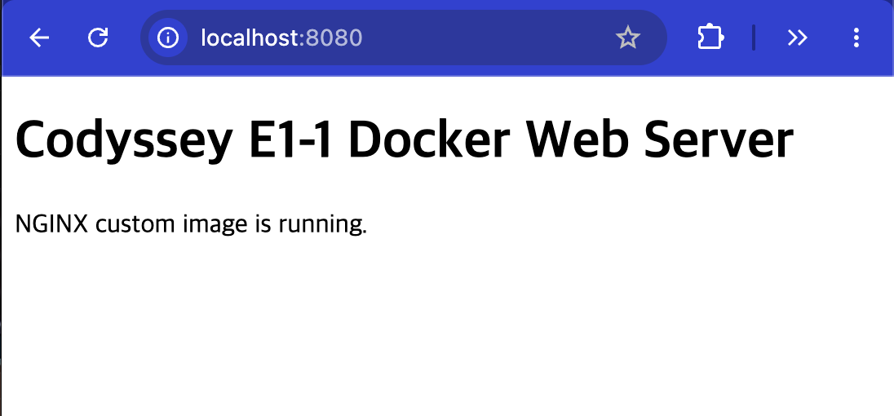
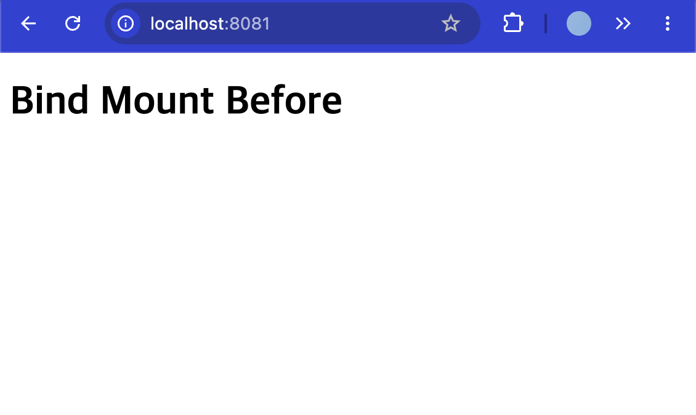
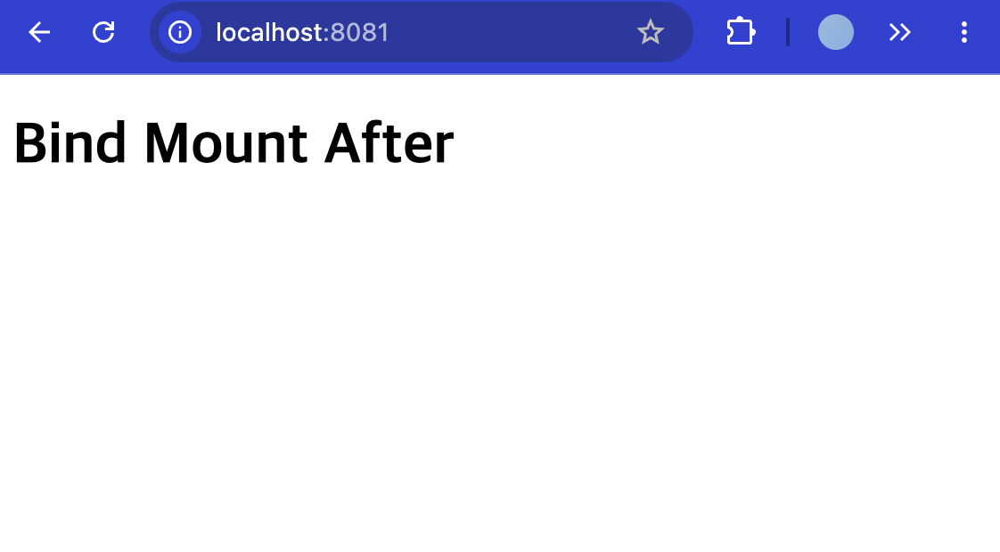
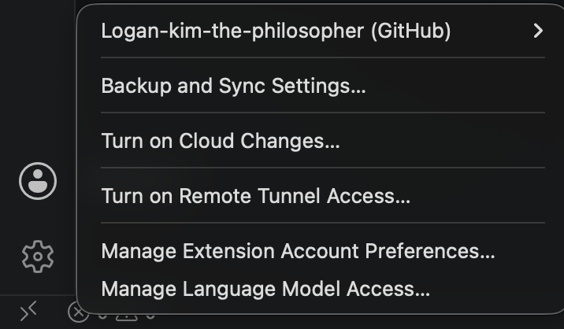

Codyssey Evidence Presentation
미션 소개 개발은 코드를 작성하는 순간이 아니라, 환경을 세팅하는 순간부터 시작됩니다. 터미널, Docker, Git. 이 세 가지를 직접 손으로 세팅해 본 경험이 있어야, 비로소 '개발을 시작한다'는 말이 실감 납니다. 도구를 다루는 법을 아는 것이 개발자로서의 첫 번째 기반입니다. 개발 워크스테이션은 코드가 "내 컴퓨터에서만" 돌아가는 문제를 줄이고, 팀원 누구나 같은 방식으로 실행, 배포, 디버깅할 수 있는 환경 구성을 목표로 합니다. 이 과정에서 핵심 도구인 리눅스 CLI(터미널), Docker(컨테이너), Git/GitHub(버전 관리 및 협업)를 함께 사용합니다. 이 도구들은 로컬 개발 환경 세팅, 재현 가능한 실행 환경 공유, 협업 기반 소스코드 관리 같은 상황에서 널리 활용됩니다. 이 미션에서는 터미널로 작업 디렉토리와 권한을 정리한 뒤, Docker를 설치 및 점검하고 컨테이너를 실행/관리합니다. 이어서 간단한 웹 서버를 Dockerfile로 컨테이너화하고, 포트 매핑으로 접속을 확인하며, 바인드 마운트/볼륨으로 "변경 반영"과 "데이터 영속성"을 직접 검증합니다. 단순히 따라 치는 실습이 아니라, 실행 결과(로그/접속/데이터 유지)로 핵심 흐름을 확인합니다. 또한, 이미지와 컨테이너의 분리, 격리된 실행 환경, 포트·스토리지 연결 방식이라는 구조적 원칙을 적용해 "왜 이런 설계가 필요한지"를 설명 가능한 형태로 정리합니다. 같은 서비스를 여러 번 실행해도 재현되는 환경을 만드는 사고방식을 경험하는 것이 목표입니다. 이 경험은 이후 리눅스 트러블슈팅, CI/CD 파이프라인, 클라우드 배포/운영 등으로 자연스럽게 확장됩니다. — (서울 추가 내용) 서울캠퍼스 환경에서는 시스템 보안 정책상 sudo 권한 사용이 제한될 수 있습니다. 이로 인해 일반적인 방식으로 Docker를 직접 설치하거나 데몬을 제어하는 데 제약이 있습니다. 이 문제를 해결하기 위해, 본 과정에서는 OrbStack을 활용합니다. OrbStack은 Docker Desktop과 유사한 컨테이너 실행 환경을 제공하는 애플리케이션으로, 별도의 sudo 권한 없이도 컨테이너를 실행하고 관리할 수 있도록 지원합니다. 교육생은 다음과 같은 방식으로 OrbStack을 활용하게 됩니다:
Requirements
미션 소개 개발은 코드를 작성하는 순간이 아니라, 환경을 세팅하는 순간부터 시작됩니다. 터미널, Docker, Git. 이 세 가지를 직접 손으로 세팅해 본 경험이 있어야, 비로소 '개발을 시작한다'는 말이 실감 납니다. 도구를 다루는 법을 아는 것이 개발자로서의 첫 번째 기반입니다. 개발 워크스테이션은 코드가 "내 컴퓨터에서만" 돌아가는 문제를 줄이고, 팀원 누구나 같은 방식으로 실행, 배포, 디버깅할 수 있는 환경 구성을 목표로 합니다. 이 과정에서 핵심 도구인 리눅스 CLI(터미널), Docker(컨테이너), Git/GitHub(버전 관리 및 협업)를 함께 사용합니다. 이 도구들은 로컬 개발 환경 세팅, 재현 가능한 실행 환경 공유, 협업 기반 소스코드 관리 같은 상황에서 널리 활용됩니다. 이 미션에서는 터미널로 작업 디렉토리와 권한을 정리한 뒤, Docker를 설치 및 점검하고 컨테이너를 실행/관리합니다. 이어서 간단한 웹 서버를 Dockerfile로 컨테이너화하고, 포트 매핑으로 접속을 확인하며, 바인드 마운트/볼륨으로 "변경 반영"과 "데이터 영속성"을 직접 검증합니다. 단순히 따라 치는 실습이 아니라, 실행 결과(로그/접속/데이터 유지)로 핵심 흐름을 확인합니다. 또한, 이미지와 컨테이너의 분리, 격리된 실행 환경, 포트·스토리지 연결 방식이라는 구조적 원칙을 적용해 "왜 이런 설계가 필요한지"를 설명 가능한 형태로 정리합니다. 같은 서비스를 여러 번 실행해도 재현되는 환경을 만드는 사고방식을 경험하는 것이 목표입니다. 이 경험은 이후 리눅스 트러블슈팅, CI/CD 파이프라인, 클라우드 배포/운영 등으로 자연스럽게 확장됩니다. — (서울 추가 내용) 서울캠퍼스 환경에서는 시스템 보안 정책상 sudo 권한 사용이 제한될 수 있습니다. 이로 인해 일반적인 방식으로 Docker를 직접 설치하거나 데몬을 제어하는 데 제약이 있습니다. 이 문제를 해결하기 위해, 본 과정에서는 OrbStack을 활용합니다. OrbStack은 Docker Desktop과 유사한 컨테이너 실행 환경을 제공하는 애플리케이션으로, 별도의 sudo 권한 없이도 컨테이너를 실행하고 관리할 수 있도록 지원합니다. 교육생은 다음과 같은 방식으로 OrbStack을 활용하게 됩니다: OrbStack 애플리케이션을 실행하면 내부적으로 Docker 엔진이 함께 구동됩니다. 이후 터미널에서는 기존과 동일하게 docker 명령어를 사용할 수 있습니다. 예: docker run, docker ps, docker build 등 최종 결과물 다음 조건을 만족하는 개발 워크스테이션 구축 결과물을 완성한다. 제출 저장소(GitHub Repository) 공개(또는 과제 제출 규칙에 맞는 권한)로 생성한다. 저장소 링크만으로 아래 산출물 전부를 확인할 수 있어야 한다. 기술 문서(README.md 등) 프로젝트 개요(미션 목표 요약) 실행 환경(OS/쉘/터미널, Docker 버전, Git 버전) 수행 항목 체크리스트(터미널/권한/Docker/Dockerfile/포트/볼륨/Git/GitHub) 검증 방법(어떤 명령으로 무엇을 확인했는지) + 결과 위치 링크 트러블슈팅 2건 이상(문제 → 원인 가설 → 확인 → 해결/대안) 기술 문서만 읽어도 전체 수행 내용을 파악할 수 있어야 한다. 터미널 조작 로그 터미널에서 수행한 핵심 명령과 출력 결과를 기술 문서에 기록한다. Docker 운영/검증 로그 docker --version, docker info 등 설치·점검 결과 docker images, docker ps -a, docker logs, docker stats 등 운영 명령 실행 흔적 Dockerfile 기반 웹 서버 컨테이너 웹 서버 소스코드(예: app/ 또는 src/) Dockerfile 빌드/실행 명령 및 결과 로그(터미널 스크린샷 가능) 포트 매핑 접속 성공 증거(스크린샷 또는 로그) 포트 매핑 접속 증거 p <host_port>:<container_port>로 실행 후, 브라우저 접속 화면(주소창 포함)을 기술 문서에 첨부한다. 바인드 마운트 반영 + 볼륨 영속성 증거 바인드 마운트: 실행 명령 + 호스트 변경 전/후 비교 Docker 볼륨: 생성/연결/검증 명령 + 컨테이너 삭제 전/후 비교 Git 설정 및 GitHub/VSCode 연동 증거 Git 사용자 정보·기본 브랜치 설정 후, VSCode에서 GitHub 로그인 및 저장소 연동 완료 민감한 개인 정보(ID/PW, 토큰 등)가 포함되지 않도록 주의한다. 과제 목표 이 과제를 마친 후, 학습자는 아래를 스스로 설명할 수 있어야 한다. 절대 경로와 상대 경로의 차이를 예시를 들어 설명할 수 있다. 파일 권한의 의미(r/w/x)와 755, 644 같은 표기가 어떤 규칙으로 해석되는지 설명할 수 있다. 기존 Dockerfile을 기반으로 “커스텀 이미지”를 만들 수 있다. 포트 매핑이 필요한 이유를 설명할 수 있다. Docker 볼륨(영속 데이터)을 설명할 수 있다. Git과 GitHub의 역할 차이(로컬 버전관리 vs 원격 협업 플랫폼)를 설명할 수 있다. 기능 요구 사항 다음 요구사항을 모두 만족해야 한다. 제출 저장소 및 기술 문서 GitHub Repository 링크로 제출한다. 기술 문서(README.md 등)는 아래 내용을 반드시 포함한다. 모든 수행 결과는 “기술 문서(README.md 등)”에서 확인 가능해야 한다. 프로젝트 개요(미션 목표 요약) 실행 환경(OS/쉘/터미널, Docker 버전, Git 버전) 수행 항목 체크리스트(터미널/권한/Docker/Dockerfile/포트/마운트/볼륨/Git/GitHub) 검증 방법(어떤 명령으로 무엇을 확인했는지) + 결과 위치/증거 링크 기술 문서 내 명령/출력은 코드블록으로 정리한다. 터미널 조작 로그 기록 다음 작업을 터미널로 수행하고, 명령어 + 출력 결과를 기술 문서에 기록한다. 현재 위치 확인, 목록 확인(숨김 파일 포함), 이동, 생성, 복사, 이동/이름변경, 삭제 파일 내용 확인, 빈 파일 생성 권한 실습 및 증거 기록 권한을 확인/변경하는 명령을 수행하고, 변경 전/후 비교를 기술 문서에 남긴다. 최소 요구: 파일 1개, 디렉토리 1개에 대해 권한 변경 실험을 수행한다. Docker 설치 및 기본 점검 Docker 버전 확인 결과를 기록한다. (docker --version) Docker 데몬 동작 여부 확인 결과를 기록한다. (docker info 또는 동등 점검) Docker 기본 운영 명령 수행 이미지: 다운로드/목록 확인 (예: docker images) 컨테이너: 실행/중지/목록 확인 (예: docker ps, docker ps -a) 운영: 로그 확인 (예: docker logs), 리소스 확인 (예: docker stats) 수행 명령과 출력 결과를 기술 문서에 남긴다. 컨테이너 실행 실습 hello-world 실행 성공을 기록한다. ubuntu 컨테이너를 실행하고 내부 진입 후 간단 명령(예: ls, echo) 수행 결과를 기록한다. 컨테이너 종료/유지(attach/exec 등)의 차이를 스스로 관찰하고 간단히 정리한다. 기존 Dockerfile 기반 커스텀 이미지 제작 아래 방식 중 하나를 선택하여 기존 Dockerfile/이미지 기반의 커스텀 이미지를 만든다. (A) 웹 서버 베이스 이미지 활용(예: NGINX/Apache 등) + 정적 콘텐츠/설정만 교체 (B) Linux 베이스 이미지(예: ubuntu/alpine 등) + 기본 기능(패키지/사용자/환경변수/헬스체크 등) 추가 제작 결과는 아래 조건을 만족해야 한다. 커스텀 이미지 빌드 성공 및 컨테이너 실행 성공 기술 문서에 다음을 포함한다. 어떤 “기존 베이스(이미지/예시 Dockerfile)”를 선택했는지 내가 적용한 커스텀 포인트 각각의 목적(간단 요약) 빌드/실행 명령 + 핵심 결과(출력/스크린샷) 포트 매핑 및 접속 증거 브라우저 접속 화면(또는 curl 응답)을 기술 문서에 첨부한다. Docker 볼륨 영속성 검증 Docker 볼륨을 생성하고 컨테이너에 연결한다. 컨테이너 삭제 전/후로 데이터를 확인하여 데이터가 유지됨을 증명한다. 기술 문서에 생성/연결/검증 절차(명령+출력)를 포함한다. Git 설정 및 GitHub 연동 * Git 사용자 정보/기본 브랜치 설정을 완료하고 git config --list 결과를 기록한다. * GitHub 로그인 및 저장소 연동을 완료하고, 연동 증거(스크린샷 등)를 기술 문서에 첨부한다. 보안 및 개인정보 보호 * 기술 문서/로그/스크린샷에 토큰, 비밀번호, 개인키, 인증 코드 등이 포함되지 않도록 마스킹한다. * 의심되는 민감정보가 노출된 경우, 즉시 히스토리/문서에서 제거하고 재발급 절차를 수행한다 (가능한 범위에서). 보너스 과제 (선택) Docker Compose 기초 docker-compose.yml의 기본 구조를 학습하고, 단일 서비스를 Compose로 실행한다. 배움 포인트: 컨테이너 실행 명령이 “문서화된 실행 설정”으로 바뀌는 이유 Docker Compose 멀티 컨테이너 웹 서버 + (임의의 보조 서비스) 2개 이상을 Compose로 함께 실행한다. 컨테이너 간 네트워크 통신이 가능한지 확인한다. 배움 포인트: 네트워크/서비스 디스커버리 개념 맛보기 Compose 운영 명령어 습득 up, down, ps, logs를 사용해 실행/종료/상태/로그를 관리한다. 배움 포인트: 운영 관점의 “상태 확인 루틴” 만들기 환경 변수 활용 Dockerfile 또는 Compose에서 환경 변수를 주입해 서버 포트/모드를 바꿔본다. 배움 포인트: 설정과 코드의 분리 GitHub SSH 키 설정 HTTPS 대신 SSH로 푸시가 가능하도록 키를 등록하고 동작을 확인한다. 배움 포인트: 인증 방식 차이와 보안 습관 개발환경 개발 환경 N/A 제약조건 제약 사항 제출 방식 제출은 GitHub Repository 링크로 진행한다. 기술 문서(README.md 등)에 수행 로그와 증거가 모두 포함되어야 한다. (별도 파일로 분리하는 것은 가능하나, README에서 링크로 접근이 가능해야 한다.) 실행 방식 모든 작업은 터미널(CLI) 기반으로 수행한다. Dockerfile은 직접 작성해야 한다. 포트 매핑과 마운트/볼륨은 직접 설정하고 동작을 검증해야 한다. 증거 수집 규칙 캡처/로그에는 “명령어 입력”과 “출력 결과”가 함께 포함되어야 한다. 브라우저 접속 증거는 주소창(포트 포함)과 응답 화면이 함께 보이도록 한다. 민감정보는 로그/이미지에 남기지 않는다(마스킹 필수). 재현성 README만 보고도 평가자가 동일 절차를 따라 결과물을 확인할 수 있어야 한다. 특정 개인 PC에 종속된 경로/설정이 있다면, 대체 방법 또는 주의사항을 함께 기록한다. Test Case 결과 예시 아래는 참고 예시다. 그대로 제출하면 안 된다. 실제 폴더명/포트/로그 문구/구성은 달라도 된다. * 기술 문서(README) 구성 예시 ## 1) 실행 환경 - OS: Ubuntu 22.04 - Shell: bash - Docker: 26.x - Git: 2.x * ## 2) 수행 체크리스트 - [x] 터미널 기본 조작 및 폴더 구성 - [x] 권한 변경 실습 - [x] Docker 설치/점검 - [x] hello-world 실행 - [x] Dockerfile 빌드/실행 - [x] 포트 매핑 접속(2회) - [x] 바인드 마운트 반영 - [x] 볼륨 영속성 - [x] Git 설정 + VSCode GitHub 연동 * ## 3) 수행 로그(발췌) bash$ pwd /home/user $ mkdir -p ~/codyssey/practice $ ls -la ... * * * * Dockerfile 커스텀 예시 FROM nginx:alpine LABEL org.opencontainers.image.title="my-custom-nginx" ENV APP_ENV=dev COPY site/ /usr/share/nginx/html/ * * * Docker 포트 매핑 실행 로그 예시 $ docker build -t my-web:1.0 . $ docker run -d -p 8080:5000 --name my-web-8080 my-web:1.0 $ curl <http://localhost:8080> Hello * $ docker run -d -p 8081:5000 --name my-web-8081 my-web:1.0 $ curl <http://localhost:8081> Hello * * * 볼륨 영속성 예시 $ docker volume create mydata $ docker run -d --name vol-test -v mydata:/data ubuntu sleep infinity $ docker exec -it vol-test bash -lc "echo hi > /data/hello.txt && cat /data/hello.txt" hi $ docker rm -f vol-test * $ docker run -d --name vol-test2 -v mydata:/data ubuntu sleep infinity $ docker exec -it vol-test2 bash -lc "cat /data/hello.txt" hi *
Chapter 1
터미널 기본 명령으로 현재 위치 확인, 숨김 항목 포함 목록 확인, 폴더/파일 생성, 내용 확인, 복사, 이름변경, 삭제를 수행하고 증거를 남긴다.
pwd와 ls -la로 위치와 목록 확인을 증명했고, mkdir/touch/printf/cat/cp/mv/rm으로 과제에서 요구한 기본 파일·디렉토리 조작을 모두 수행했다. 최종 출력은 복사본 내용 보존, 이름 변경 반영, 삭제 반영을 보여준다.
Chapter 2
파일 1개와 디렉토리 1개의 권한을 변경하고 ls -ld 출력으로 변경 전후를 비교한다.
숫자 권한 700/600은 그룹과 기타 사용자 권한을 제거해 소유자 전용으로 제한했고, 755/644는 일반적인 디렉토리/파일 권한으로 복원했다. ls -ld 출력으로 파일과 디렉토리 각각의 권한 변경 전후를 확인했다.
Chapter 3
Docker 명령어 설치 여부와 Docker 엔진/데몬 통신 가능 여부를 확인한다.
Docker CLI가 설치되어 있고 Docker 엔진/데몬과 통신 가능한 상태임을 확인했다. docker info의 Server 정보가 출력되었으므로 컨테이너 실행 환경이 정상 동작 중이라고 해석할 수 있다.
Chapter 4
Docker가 이미지를 내려받고 컨테이너를 생성/실행할 수 있는지 확인한다.
Docker 클라이언트가 데몬에 연결했고, 데몬이 hello-world 이미지를 pull한 뒤 새 컨테이너를 생성/실행하고 출력을 터미널로 전달했다. Hello from Docker! 문구로 Docker 컨테이너 실행 가능 상태를 확인했다.
Chapter 5
Ubuntu 컨테이너 내부에서 pwd, ls, echo 명령을 실행해 격리된 Linux 환경을 확인한다.
Docker가 ubuntu 이미지를 pull하고 새 컨테이너를 생성한 뒤 bash 안에서 여러 명령을 실행했다. / 및 Linux 기본 디렉토리 목록은 명령이 호스트가 아니라 컨테이너 내부 파일시스템에서 실행되었음을 보여준다. --rm 옵션으로 실행 종료 후 컨테이너를 남기지 않는 정리 방식도 적용했다.
Chapter 6
종료된 컨테이너 로그를 확인하고 실행 중 컨테이너의 리소스 사용량을 확인한 뒤 실습 컨테이너를 정리한다.
docker logs로 종료된 컨테이너의 과거 표준출력을 재확인했고, docker stats로 실행 중 컨테이너의 CPU/메모리/네트워크/프로세스 사용량을 확인했다. docker rm -f로 실습용 컨테이너를 정리해 운영 명령의 확인과 정리 흐름을 함께 수행했다.
Chapter 7
직접 작성한 Dockerfile과 정적 웹 콘텐츠를 사용해 NGINX 기반 커스텀 이미지를 빌드한다.
Dockerfile의 베이스 이미지 nginx:alpine과 COPY 지시어가 정상 처리되어 커스텀 이미지가 생성되었다. 이미지 태그 codyssey-e1-1-web:1.0이 로컬 이미지 목록에 표시되므로 이후 docker run으로 실행 가능한 빌드 산출물이 준비된 상태다.
Chapter 8
커스텀 NGINX 이미지를 컨테이너로 실행하고 호스트 포트 8080을 컨테이너 포트 80에 매핑해 접속을 확인한다.
호스트 포트 8080이 컨테이너 내부 NGINX 포트 80에 연결되었고, curl 응답으로 커스텀 HTML이 반환되어 포트 매핑과 웹 서버 실행이 정상임을 확인했다. Dockerfile의 COPY로 넣은 정적 콘텐츠가 실제 컨테이너에서 제공되고 있다.

Chapter 9
호스트 디렉토리를 컨테이너 웹 루트에 바인드 마운트해 호스트 파일 변경이 컨테이너 응답에 즉시 반영되는지 확인한다.
바인드 마운트는 호스트 디렉토리를 컨테이너 내부 경로에 연결하므로, 호스트 파일 변경이 컨테이너 NGINX 응답에 즉시 반영된다. 이미지에 COPY한 파일과 달리 재빌드 없이 변경 전/후를 확인할 수 있었다. :ro 옵션은 컨테이너에서 해당 마운트를 읽기 전용으로 사용하도록 제한한다.


Chapter 10
Docker 볼륨에 저장한 데이터가 컨테이너 삭제 후에도 유지되는지 확인한다.
데이터가 컨테이너 내부 임시 파일시스템이 아니라 Docker 볼륨 codyssey-volume-data에 저장되었기 때문에, 첫 번째 컨테이너를 삭제한 뒤에도 새 컨테이너에서 같은 데이터를 읽을 수 있었다. 이는 컨테이너 수명과 볼륨 데이터 수명이 분리되어 있음을 보여준다.
Chapter 11
Git 설치 상태, 사용자 정보, 기본 브랜치 설정을 확인하고 개인정보는 마스킹해 기록한다.
Git이 설치되어 있고 전역 사용자 이름, 이메일, 기본 브랜치 main이 설정되어 있다. 이메일은 제출 문서에서 전체를 노출하지 않고 마스킹해야 한다. Git 설정은 로컬 커밋 작성자 정보와 기본 저장소 초기화 동작에 영향을 준다.

Chapter 12
GitHub CLI 로그인 상태와 현재 프로젝트의 Git 저장소/원격 저장소 연결 여부를 확인한다.
GitHub CLI 인증은 정상 상태로 확인되었다. 다만 현재 폴더는 Git 저장소가 아니므로 GitHub 제출을 위해서는 git init, 원격 저장소 연결, add/commit/push 단계가 추가로 필요하다. VSCode GitHub 연동 화면 캡처와 gh 인증 상태를 함께 GitHub 연동 증거로 사용할 수 있다.
Chapter 13
현재 과제 산출물 폴더를 로컬 Git 저장소로 초기화하고 제출 파일의 추적 상태를 확인한다.
현재 폴더가 로컬 Git 저장소가 되었고 기본 브랜치 main이 적용되었다. 아직 커밋 전이므로 제출 산출물은 untracked 상태이며, 다음 단계에서 제출 대상 파일을 선별해 git add 후 커밋할 수 있다.
Chapter 14
제출에 필요한 README, docs, 실습 로그, 작업 산출물, 캡처 증거만 Git 커밋 대상으로 스테이징한다.
제출 문서와 발표 HTML, 증거 이미지, Dockerfile/웹 소스, 실습 원본 로그를 커밋 대상으로 올렸다. Codex/워크플로 내부 메타데이터와 중복 생성물은 제외하여 제출 저장소를 과제 중심으로 정리했다.